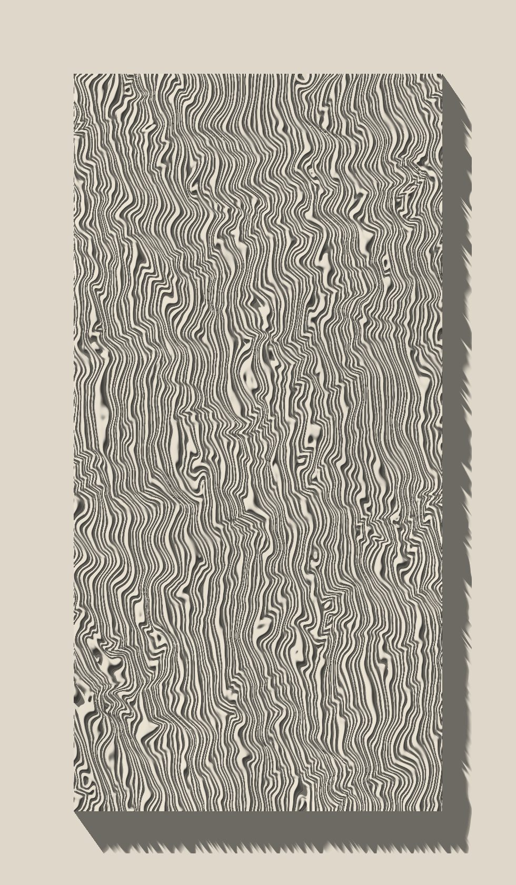
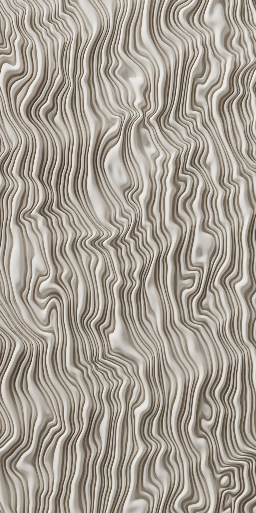
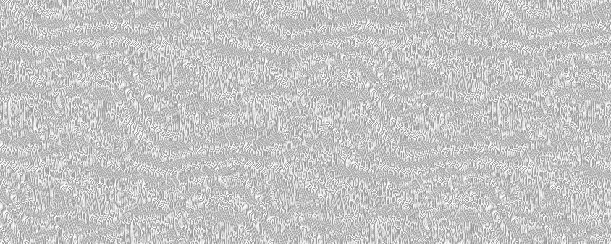
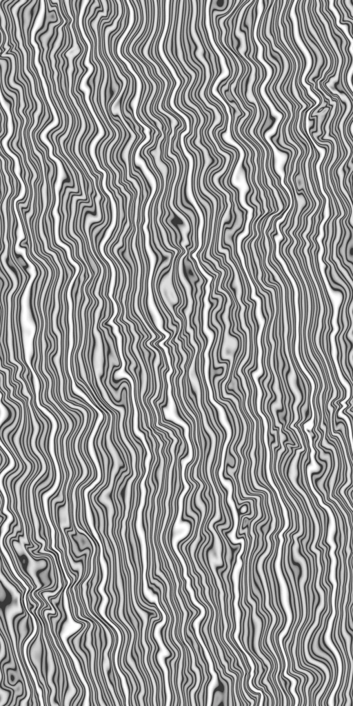
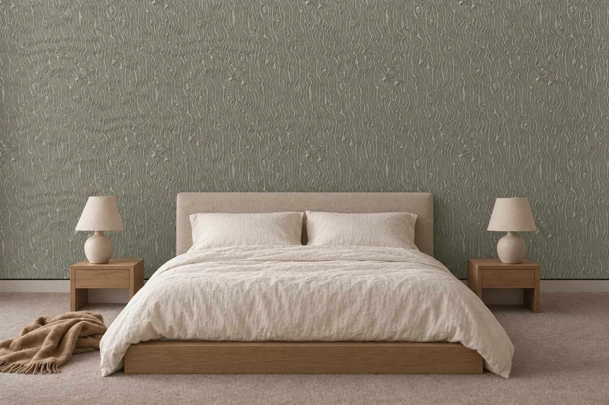
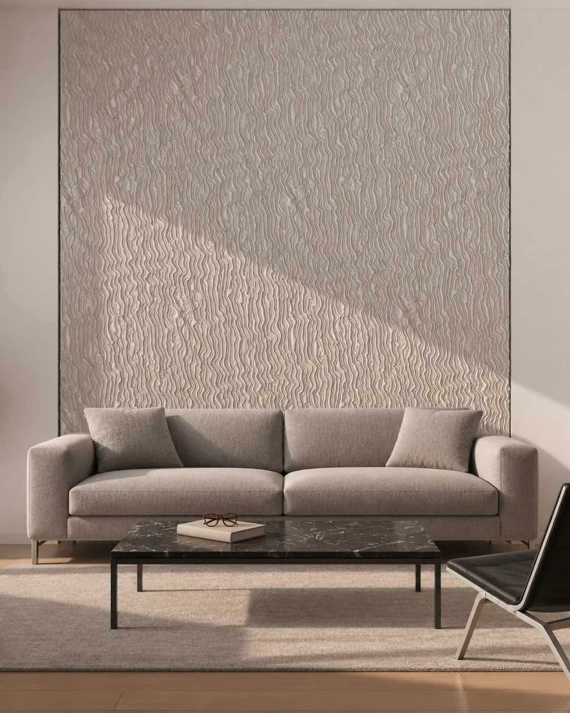
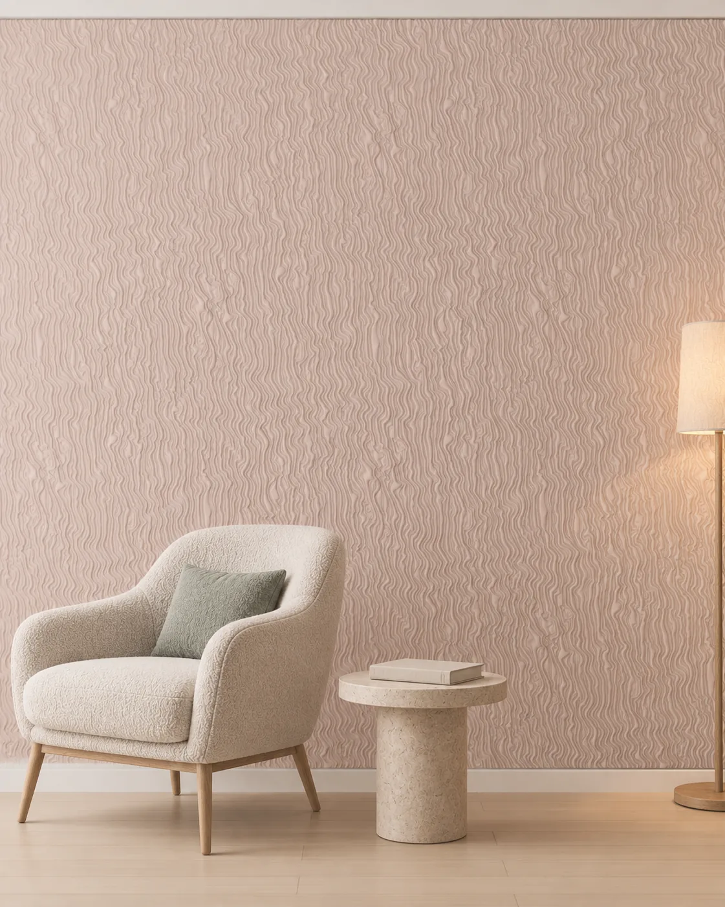
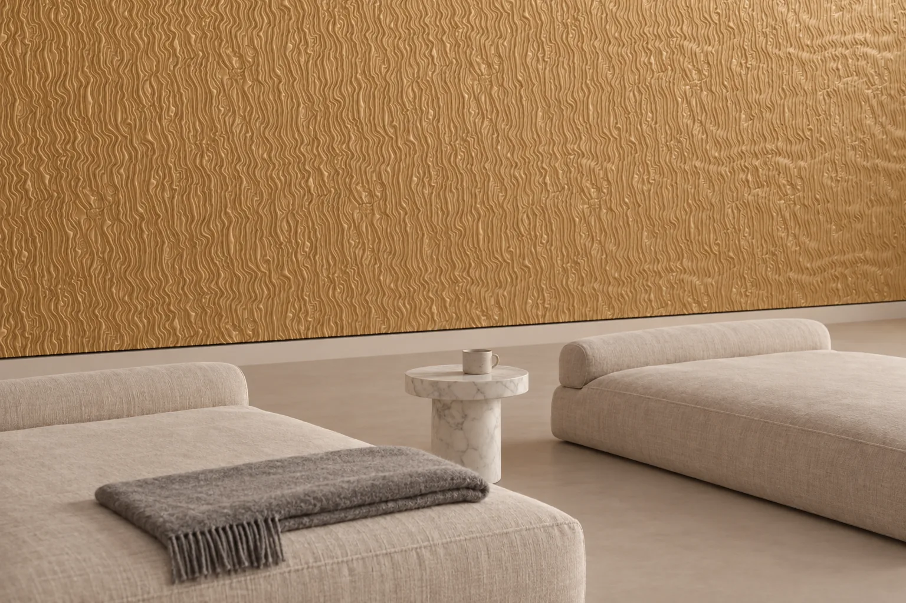

Glissando
A surface of drifting fibres. Upright panels are laid with a half-height offset; the relief rises from a 3 mm ground to 14 mm, and the fibres sharpen as the light comes round to the side.

- Size
- 600 × 1200 mm
- Relief
- 14 mm (3 mm ground)
- Layout
- Half-height running bond
- Material
- Lumina PMAG™ (polymer-modified composite gypsum)
- Surface
- Paint-ready, or with an artisan finish



The pattern
Glissando is a surface of drifting fibres. The fibres run along the panel at a slight angle and thicken and thin as they go; the surface recalls the lines of a cloth or of moving water. It has no motif at all, only rhythm.
The relief rises from a 3 mm ground to 14 mm. The ground stays calm and the fibres gain depth above it, so most of the surface remains a readable plane.
How it reads in light
The image at the top of the page is in live light. When the light comes from the side, at an angle that grazes the fibres, the lines sharpen and the surface seems to move. As the light turns head-on the fibres soften and the panel approaches a single tone.
On the wall
Glissando is designed as an upright 600 × 1200 mm panel. Panels are laid with a half-height offset of 600 mm, so the vertical joints do not line up and the fibres meet the lines of the neighbouring panel. It is a layout built for long, high walls. Because the fibres flow vertically, the effect of the surface grows with the height of the ceiling; on the layout drawing the offset is considered together with how it ends at the edges of the wall.
In a room




To see how this design would sit on your wall, send the wall dimensions.